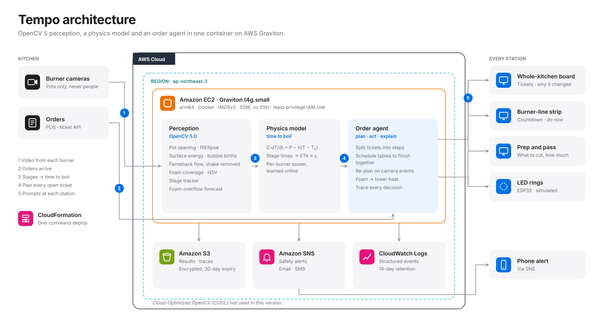
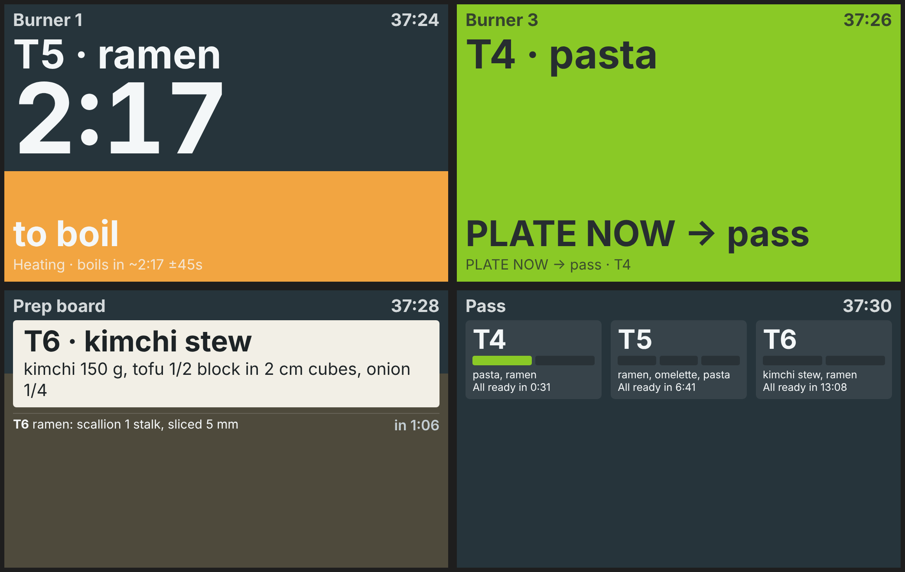
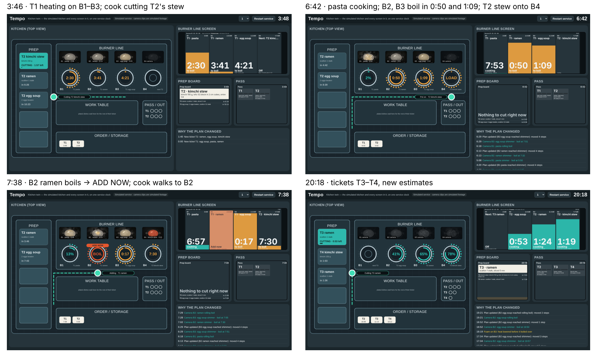
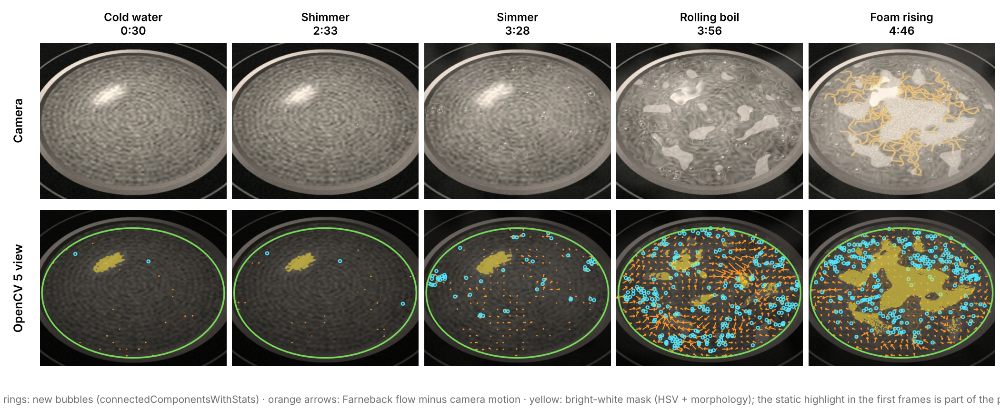
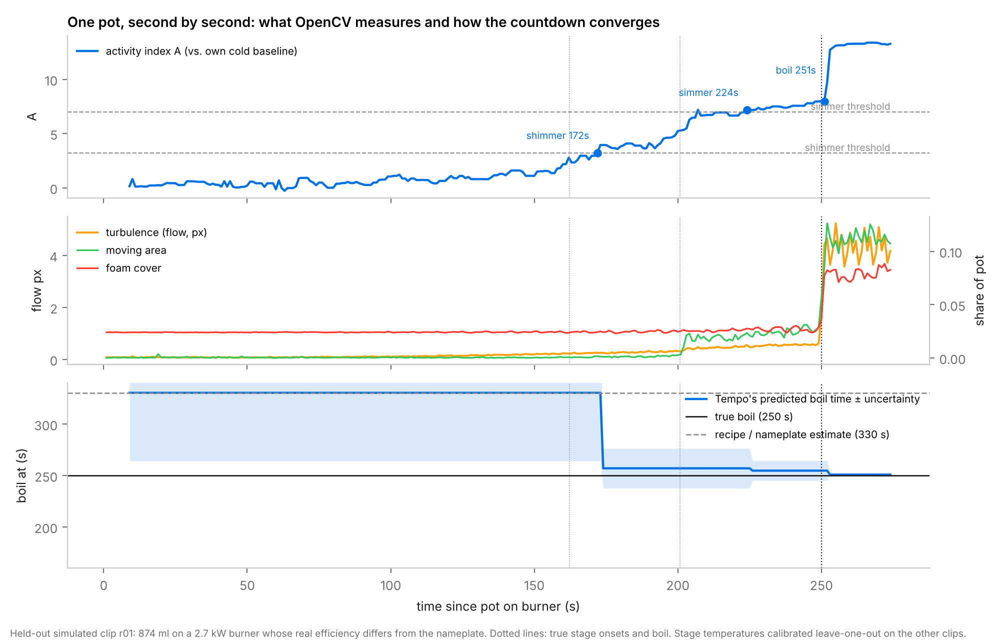
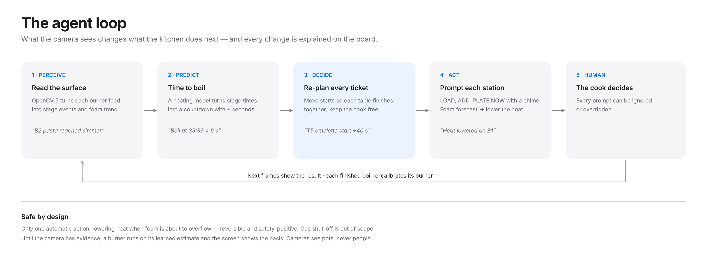
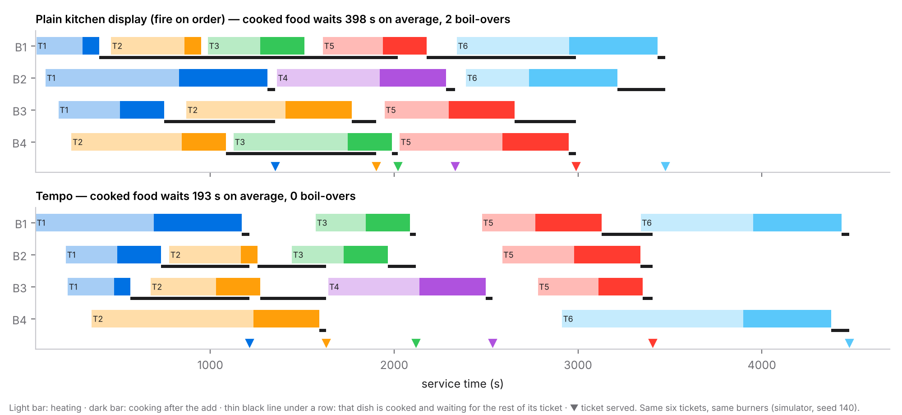
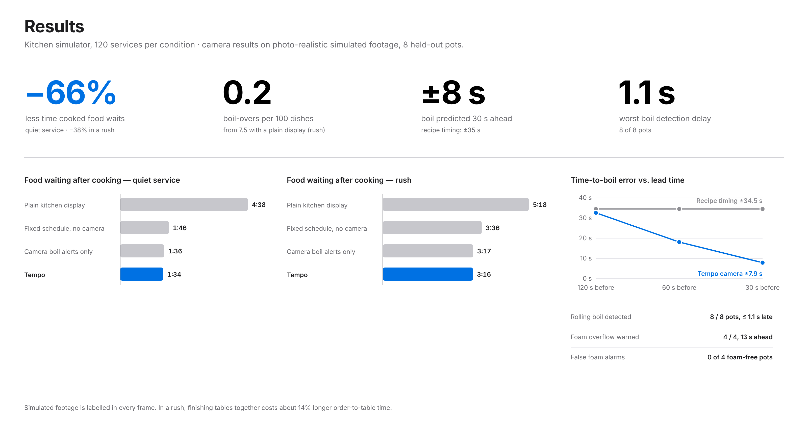
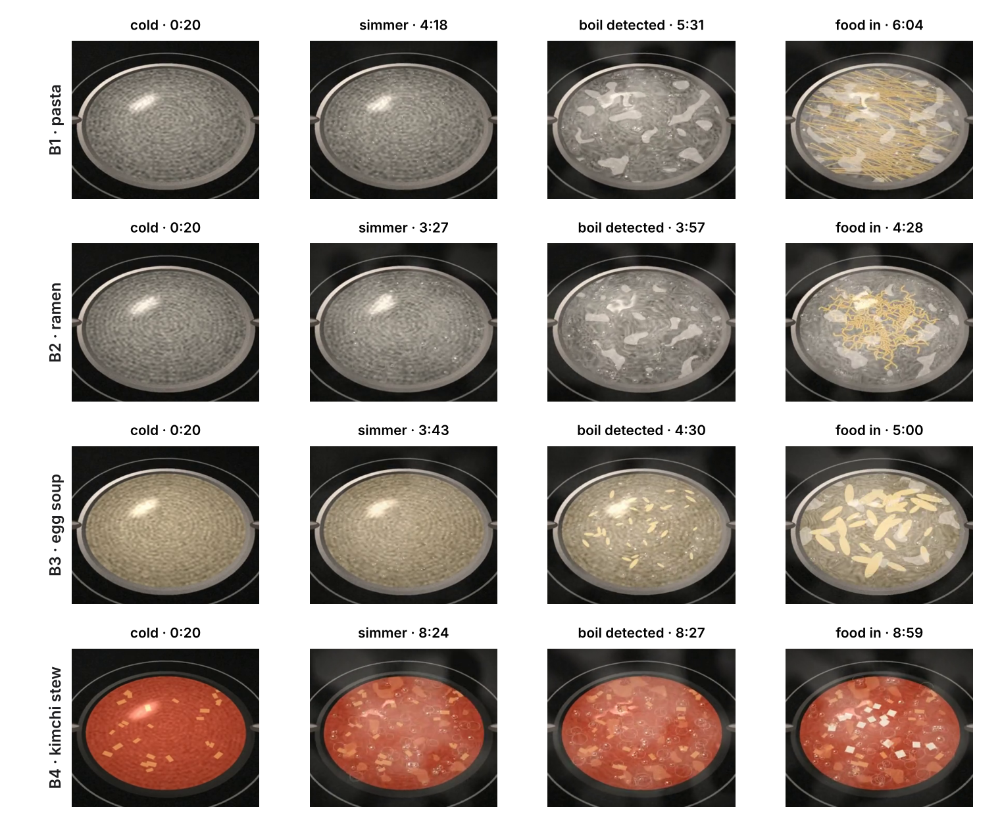
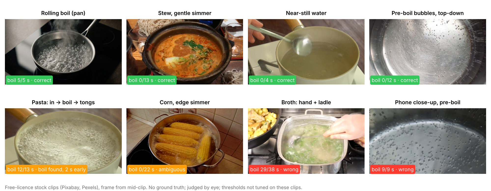

A ticket for one table often mixes dishes with different heat-up and cook times: a stew, a ramen, an egg soup. A plain kitchen display fires every dish when the order arrives; the long dish defines the table and the short ones finish early and cool, go soggy or get re-heated. Experienced cooks stagger starts by feel, but the stagger depends on how long each pot will take to boil, which no timer covers. Boiling also invites leaving the pot: unattended cooking is the leading cause of restaurant fires (cooking equipment starts ≈61% of fires in US eating and drinking places, NFPA).
Users: small and mid-size kitchens that boil — ramen and noodle shops, pasta, soups and stews, school and hospital catering, delivery kitchens — usually with one or two cooks running four to six burners and staff who may not share a language. Existing systems focus elsewhere: kitchen camera systems verify order assembly (e.g. Agot AI) or track workers' actions for station displays (US 11,562,569); jam-detection cameras alert but do not plan. None reads the state of the liquid or schedules a table around it. Tempo never films people.


| Screen | Where it hangs | Who reads it | What it shows | Live URL |
|---|---|---|---|---|
| Prep board | above the cutting board | prep cook | what to cut for which ticket, how much, what is next | /station/prep |
| Burner line | long strip above the range | line cook | per burner: countdown, progress fill, LOAD / ADD / PLATE NOW | /station/line |
| Single burner | beside one burner | whoever is nearest | one burner, very large | /station/B1…B4 |
| LED ring | around the knob | anyone, without reading | colour + fill + blink in the same language | /leds (simulated) |
| Pass | at the pass | expo / server | plates per ticket, "all ready in m:ss" | /station/pass |
| Whole-kitchen board | office or chef's tablet | head chef | everything above + cameras + why the plan changed | /board |
| Kitchen twin | demo only | judges | a top view of the simulated kitchen and all screens on one clock | /sim |

/sim): a flat floor-plan digital twin of the simulated kitchen — prep slots, burner line with cameras and LED rings, work table, pass, order rail, and the cook moving along the walkway (dashed: last move) — next to the burner-line, prep and pass screens it drives, all on one service clock. Four moments of the demo service.http://ec2-43-201-153-31.ap-northeast-2.compute.amazonaws.com/sim (kitchen twin) · /board (whole kitchen) · /station/line · /station/prep · /leds. Any phone can become a station screen by scanning the QR codes under Station screens on the board. An 88-second screen recording of the twin accompanies this report (kitchen_twin_demo.mp4).All perception runs on OpenCV 5.0.0 (opencv-python-headless==5.0.0.93, arm64 and x86 wheels) in tempo/vision.py. Each burner feed is processed independently at camera frame rate; features are aggregated per second.
| Step | OpenCV 5 operations | Why |
|---|---|---|
| Pot opening | Canny → findContours → fitEllipse; HoughCircles fallback | phones on a stand see the pot as an ellipse; mask is shrunk to the liquid |
| Surface micro-activity | Gaussian high-pass; temporal absolute difference | convection shimmer and first bubbles change fine texture before anything visible moves |
| Bubble births | threshold + connectedComponentsWithStats on newly appearing bright spots | nucleation rate rises with temperature |
| Turbulence | calcOpticalFlowFarneback (half resolution, ~5 Hz) minus the median flow | rolling boil = large incoherent motion; removing the median cancels camera shake |
| Foam | HSV threshold relative to the pot's own brightness + morphological opening; linear trend | starch foam spreads; trend gives seconds to overflow |
| Stage tracker | activity index = Σ log-ratios to the cold baseline; median smoothing; 3 s persistence; monotone | stages are relative to each pot's first seconds, so lighting and camera do not matter |

| Per-camera cost (this container, x86, 1 core) | Value |
|---|---|
| Frames processed per second at 1280×720 | 27 fps |
| Camera frame rate needed | 10–15 fps |
| Output per second per burner | 6 numbers + stage + countdown |
| Frames stored | none (uploads deleted after analysis) |
One core keeps up with one 15 fps camera with headroom; a 4-burner kitchen needs about two vCPUs. Graviton throughput is not separately benchmarked here.
A pot heats as a first-order system, C dT/dt = P − h(T − Tenv). Temperature is invisible, but each visible stage appears at a characteristic temperature. Given the time a stage first appears, a ratio fit anchored at the start gives the time to boil; later stages carry more weight; the estimate never predicts the past. Before any evidence the burner's learned prior is used, and each finished heat-up updates that burner's power estimate. Stage temperatures are calibrated per camera setup from a few clips that run to a boil (fractions of heat-up time; leave-one-out in all evaluations).


Decide. Every open ticket is split into prep, burner and plate steps. A forward pass assigns each waiting dish to the burner on which it finishes first (with hysteresis so screens do not reshuffle); each ticket's target is its latest finish; dishes are then started as late as possible without delaying the next dish that needs the same burner. Re-planning is triggered by new orders and by camera stage events, and never reads future information. The agent also keeps the cook's hands free when a boil is predicted within the duration of a task it would otherwise start.
Act. Prompts on station screens with a chime; lowering heat when foam is forecast to overflow (the only automatic action — safe and reversible); SNS alerts. Gas shut-off is out of scope (certified hardware). Trace. Every decision is logged with its visual cause, e.g. "Camera: B2 pasta reached simmer, boil now predicted at 35:39 → T5 ramen start +16 s, T5 omelette start +40 s".
| Time | Visual evidence | Decision | Shown to |
|---|---|---|---|
| 4:20 | B1 pasta reached shimmer → boil predicted 6:05 | T1 ramen add +45 s; T2 ramen and egg soup start +140 s | burner line, prep board |
| 6:13 | B2 ramen reached shimmer → boil predicted 7:32 | T1 pasta add +25 s; T2 starts −92 s | burner line, prep board |
| 6:29 | B3 egg soup reached shimmer → boil predicted 7:51 | T1 egg soup add −18 s; T2 starts +17 s | burner line |
| 8:12 | B3 egg soup rolling boil detected | T1 egg soup add +17 s (hold so T1 finishes together) | B3 screen: "hold, add in 0:17" |
| 8:20 | B2 ramen foam rising, overflow forecast | heat lowered (automatic) | B2 ring turns yellow, board log |
| 13:57 | B4 kimchi stew reached shimmer → boil predicted 17:33 | T2 ramen add +42 s; T3 ramen start −50 s | burner line, prep board |
Table: decisions from the demo service's trace (/api/replay), each with its visual cause.

One CloudFormation template (deploy/cloudformation.yaml) creates an EC2 t4g.small (Graviton, arm64) instance running the Docker image, an encrypted private S3 bucket with 30-day expiry for results and traces, an SNS topic for safety alerts, a CloudWatch log group with 14-day retention, and a least-privilege IAM role (S3 put/get on its own bucket, SNS publish on its own topic, logs). No SSH: administration via SSM; IMDSv2 required; the container runs as a non-root user with a health check. deploy/deploy.sh deploys from AWS CloudShell in one command; teardown.sh removes everything. A public endpoint serves the live board, station screens, the LED simulation and POST /api/vision, which runs the perception on an uploaded pot video.

One cook, four burners whose real power differs from the nameplate by −25…+10 %, five dishes (ramen, kimchi stew, egg soup, pasta, omelette). Per pot, volume, efficiency and tap temperature vary; the camera reports stages with noise and lag; a cook without a prompt notices a boil after 4–25 s; foam surges become boil-overs if nobody acts within 20 s. Each policy runs the same 120 services (common random numbers). Food waiting is the time a finished dish waits for the rest of its ticket.
| Quiet service | Food waiting | Worst 10 % | Order to table | Boil-overs / 100 dishes |
|---|---|---|---|---|
| Fire on order (plain display) | 4:38 | 10:06 | 15:38 | 1.16 |
| Fixed schedule (no camera) | 1:46 | 3:15 | 15:12 | 2.40 |
| Camera boil alerts only | 1:36 | 2:40 | 15:22 | 1.41 |
| Tempo | 1:34 (−66 %) | 2:33 | 15:40 (+0 %) | 0.00 |
| Rush (a ticket every 5 min) | Food waiting | Worst 10 % | Order to table | Boil-overs / 100 dishes |
|---|---|---|---|---|
| Fire on order (plain display) | 5:18 | 12:59 | 32:16 | 7.50 |
| Fixed schedule (no camera) | 3:36 | 8:24 | 34:47 | 7.22 |
| Camera boil alerts only | 3:17 | 7:38 | 35:18 | 5.16 |
| Tempo | 3:16 (−38 %) | 7:33 | 36:40 (+14 %) | 0.19 |
Reading the numbers honestly. Most of the reduction in waiting comes from planning tickets to finish together at all; the camera adds a further 8–17 s (quiet) and 13–26 s (rush) per dish versus the camera-less schedule (95 % bootstrap CIs) and almost eliminates boil-overs. Predicting the boil adds little over merely detecting it for synchronisation; its value is in the countdowns staff act on and in keeping the cook free. In a rush, synchronising costs about 14 % longer order-to-table time; we plan a "speed first" mode rather than hide this.
Our renderer (tempo/synth_real.py) produces what a phone on a stand sees: oblique view, brushed-steel pot, refraction of the bottom, nucleating, rising and popping bubbles with ripples, rolling-boil froth, steam, ramen that loosens, starch foam, lighting flicker, camera jitter, vignetting, sensor noise and H.264 compression; ground truth comes from the same heating model. Eight held-out clips (volume 450–1000 ml, 1.8–3.0 kW, tap 10–24 °C, varied tilt, light and white balance), stage temperatures calibrated leave-one-out.
| Time-to-boil error | Recipe / nameplate | Tempo |
|---|---|---|
| 120 s before boil | ±34.5 s | ±32.6 s |
| 60 s before boil | ±34.5 s | ±18.1 s |
| 30 s before boil | ±34.5 s | ±7.9 s |
| Event | Result |
|---|---|
| Rolling boil detected | 8/8, ≤1.1 s late |
| Foam overflow warned in time | 4/4, 13 s ahead |
| False foam alarms | 0 (4 clips without foam) |
| Pot centre error | ≤17 px at 1280×720 |
| Clip | Pot | True boil | Recipe error | Tempo error 60 s before | 30 s before | Boil detected late by | Foam warning |
|---|---|---|---|---|---|---|---|
| r00 | 709 ml · 2.8 kW | 239 s | 26 s | 15 s | 15 s | 0.3 s | 12 s ahead |
| r01 | 874 ml · 2.7 kW | 250 s | 80 s | 7 s | 7 s | 1.0 s | — |
| r02 | 735 ml · 2.7 kW | 272 s | 16 s | 6 s | 8 s | 0.6 s | 13 s ahead |
| r03 | 732 ml · 2.0 kW | 430 s | 24 s | 9 s | 9 s | 0.5 s | — |
| r04 | 837 ml · 2.2 kW | 386 s | 14 s | 2 s | 9 s | 0.7 s | 15 s ahead |
| r05 | 551 ml · 2.9 kW | 163 s | 46 s | 46 s | 1 s | 0.1 s | — |
| r06 | 637 ml · 2.6 kW | 275 s | 17 s | 6 s | 6 s | 0.9 s | 12 s ahead |
| r07 | 513 ml · 2.8 kW | 153 s | 52 s | 52 s | 7 s | 1.1 s | — |
An earlier, simpler top-down synthetic set (10 clips) was used during development only; the numbers above are the ones we stand behind.

| Burner · dish | Volume · power | True boil | Detected | Foam warning |
|---|---|---|---|---|
| B1 · pasta | 1000 ml · 3.0 kW | 5:28 | 5:28 | wrong: 1 false warning 4 s before the pasta went in; the real foam was missed |
| B2 · ramen | 550 ml · 2.6 kW | 3:54 | 3:54 | 13 s before overflow |
| B3 · egg soup | 500 ml · 2.2 kW | 4:24 | 4:27 | — (no foam) |
| B4 · kimchi stew | 750 ml · 1.7 kW | 8:23 | 8:24 | — (no foam) |
The pasta clip shows a foam failure: rolling-boil froth on clear water crossed the foam threshold, and the starch foam that followed was not separated from it. In the demo service that false warning is therefore not used to drive the pot. The red stew's early stages were seen about two minutes late (shimmer at 7:12 vs 5:04 true): colour hides fine texture, so coloured liquids need their own calibration clips.
Stock clips of real pots (Pixabay / Pexels, free licence; 5–38 s each) start mid-process, so there is no cold baseline and no ground-truth timeline. We therefore test only the absolute part of the boil rule (flow ≥ 1.5 px and moving area ≥ 4 %, thresholds unchanged from the simulated evaluation), with the pot outline set by one tap as at installation. Labels are by eye. Nothing was tuned on these clips.
| Clip (what a person sees) | Seconds flagged "rolling boil" | Verdict |
|---|---|---|
| Pan at a rolling boil, steam | 5 / 5 | correct |
| Earthenware stew, gentle simmer | 0 / 13 | correct |
| Near-still water, ladle passes | 0 / 4 | correct |
| Top-down water, small pre-boil bubbles | 0 / 12 | correct |
| Pasta: water → spaghetti in → rolling boil → tongs | 12 / 13 | boil found; 2 s early while pasta goes in |
| Corn simmering at the edges | 0 / 22 | ambiguous (gentle boil, not rolling) |
| Broth: herbs added by hand, ladle stirring | 29 / 38 | wrong — hand and ladle motion read as boiling |
| Phone close-up of pre-boil bubbles | 9 / 9 | wrong — false boil at close range |

Two lessons: hands and utensils in the pot must be detected and ignored (today they are not), and the absolute thresholds depend on camera distance, which is why the deployed system relies on each pot's own cold baseline and per-camera calibration. The automatic pot finder located the opening in 3 of 5 clips, so installation uses a one-tap outline.
pip install -r requirements.txt · uvicorn app.main:app · pytest -q tests (6 tests) · python -m eval.kitchen_eval 120 · python -m eval.make_real eval 0 8 then python -m eval.vision_eval data/real_eval --realistic · real-footage check: python -m eval.real_check (stock clips listed in README) · deploy: bash deploy/deploy.sh in AWS CloudShell, updates with bash deploy/update.sh. Dependencies are pinned in requirements.txt.